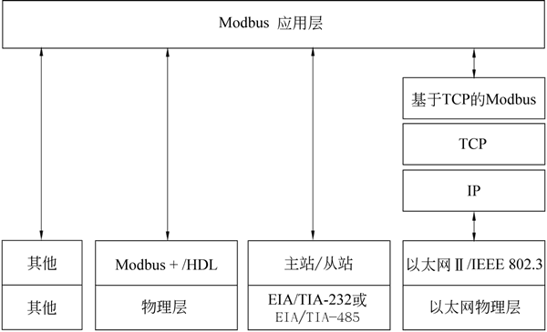
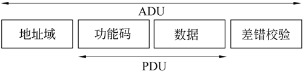
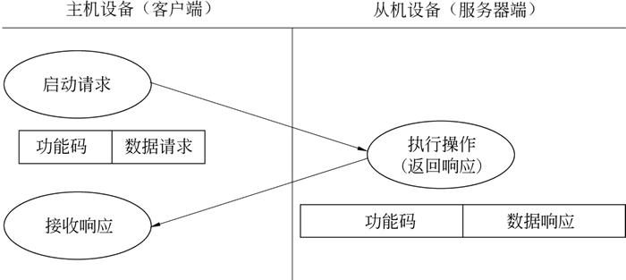
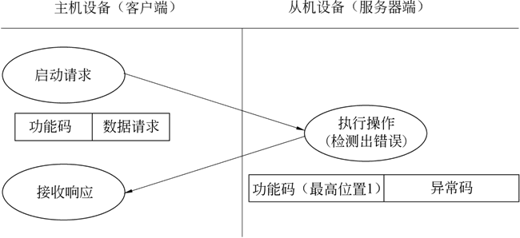

首页 > 编程笔记
Modbus通信协议精讲
Modbus 协议是由 Modicon 公司（现为施耐德电气公司的一个品牌）在 1979 年开发的，是全球第一个真正用于工业现场的总线协议，其 LOGO 如下图所示。
图 1 Modbus 的 LOGO
为了更好地普及和推动 Modbus 基于以太网（TCP/IP）的分布式应用，施耐德公司已将 Modbus 协议的所有权移交给 IDA（Interface for Distributed Automation，分布式自动化接口）组织，并成立了 Modbus-IDA 组织，此组织的成立和发展进一步推动了 Modbus 协议的广泛应用。
Modbus 协议定义了一个控制器能够认识和使用的消息结构，而不管它们是经过何种网络进行通信的；而且描述了控制器请求访问其他设备的过程，如何应答来自其他设备的请求，以及怎样侦测错误并记录；并制定了统一的消息域的结构和内容。
当在 Modbus 网络上通信时，Modbus 协议决定了每个控制器必须要知道它们的设备地址，识别按地址发来的消息决定要产生何种行为。如果需要回应，则控制器将生成反馈信息并通过 Modbus 协议发送。
Modbus 通信协议具有以下几个特点。
在大多数工厂里，现场仪表采用单独的控制室直连对绞线电缆连接到控制系统。当仪表设备被连接到一种分散式 I/O 系统时，在 Modbus 协议的帮助下可以增加更多的现场设备，但是仅仅需要一根对绞线电缆就可以把所有数据传送到 Modbus 主站设备。以 Modbus 网络的方式组网连接时，可以把现场设备连接到一个 DCS 过程控制系统、PLC 设备或工业计算机系统，整个工厂的连接都能够从对绞线电缆控制室直连的方式转变为 Modbus 网络连接方式。
现代工业控制领域持续不断产生和应用诸如现场总线和网状网络等先进的概念，而 Modbus 协议的简单性以及其便于在许多通信媒介上实施应用的特点一直使它受到最广泛的支持，并且成为全球应用最广泛的工业协议。
当使用现有老式控制系统的用户发现自己需要扩充现场仪表或者增加远程控制器时，基本上都会采用 Modbus 作为一个能够解决复杂问题的简单方案。当用户试图把一个外来设备连接到既存控制系统中时，使用设备的 Modbus 接口被证明是最容易、最可靠的办法。
虽然 Modbus 已经发展到了极为成熟的阶段，但它仍然是十分普及的通信方式之一。Modbus 便于学习、使用，非常可靠，价格低廉，并且可以连接到工业控制领域几乎所有的传感器和控制设备上。学会并掌握 Modbus 开发将会成为一项具有广泛意义和实际应用价值的技能。
自从 1979 年发布并成为工业串行链路通信的事实标准以来，Modbus 使成千上万的自动化设备能够通信。目前，为了继续增加对简单而优雅的 Modbus 通信协议的支持，国际互联网组织规定并保留了 TCP/IP 栈上的系统 502 端口专门用于访问 Modbus 设备。
Modbus 协议栈模型如下图所示：

图 3 Modbus串行网络结构
Modbus 串行链路连接存在两个变种，它们在协议细节上略有不同，主要区别是传输数据的字节表示上的不同。这两个变种包括 RTU 模式和 ASCII 模式。
Modbus RTU 模式是一种紧凑的、采用二进制表示数据的方式；而 Modbus ASCII 模式是一种人类可读的、冗长的表示方式。这两个变种都使用串行链路通信（Serial Communication）方式，为了确保数据传输的完整性和准确性，RTU 模式下消息格式命令和数据带有循环冗余校验的校验和，而 ASCII 模式下消息格式采用纵向冗余校验的校验和，而且被配置为 RTU 模式的节点不能与配置为 ASCII 模式的节点通信，反之亦然。
通过 TCP/IP（例如以太网）物理层的连接存在多个 Modbus/TCP 变种，这种方式不需要校验和的计算。
以上 3 种通信模式在数据模型和功能调用上都是相同的，只有传输报文的封装方式是不同的。
当前，Modbus 协议有一个扩展版本 Modbus Plus（Modbus+ 或者 MB+），不过此协议是 Modicon 专有的，与 Modbus 不同，它需要一个专门的协处理器处理类似 HDLC 的高速令牌旋转，它使用 1Mb/s 的双绞线，并且每个节点都有转换隔离装置，是一种采用转换/边缘触发而不是电压/水平触发的装置。连接 Modbus PLUS 到计算机需要特别的接口，通常是支持 ISA（SA85）、PCI 或者 PCMCIA 总线的板卡。
一个 Modbus 命令包含准备执行指令的设备的 Modbus 地址。线路上的所有设备都会收到命令，但只有指定地址的设备会执行并回应指令（地址 0 例外，指定地址 0 的指令是广播指令，所有收到指令的设备都会运行，不过无须回应指令）。所有 Modbus 传输报文都包含错误校验码，以确定到达的命令是否完整。
例如，基本的 Modbus 命令能指示一个 Modbus RTU 设备改变其寄存器的某个值，控制或者读取一个 I/O 端口，以及指挥设备回送一个或者多个寄存器中的数据。
有许多网关设备都支持 Modbus 协议，因为 Modbus 协议简单且容易复制，其中有一些是专为 Modbus 协议特别设计的，与复杂的使用有线、无线通信甚至短消息等的 GPRS（General Packet Radio Service）的设计不同，这些设备要简单得多，不过设计者需要克服高延迟和时序的问题。
Modbus 是一个请求/应答协议，并且提供统一的功能码用于数据传输服务。Modbus 功能码是 Modbus 请求/应答 PDU（Protocol Data Unit，协议数据单元）的元素之一，所谓的 PDU 是 Modbus 协议定义的一个与基础通信层无关的简单协议数据单元。而在特定总线或网络上，Modbus 协议则通过 ADU（Application Data Unit，应用数据单元）引入一些附加域，以实现完整而准确的数据传输。
为了寻求一种简洁的通信格式，Modbus 协议定义了 PDU 模型，即功能码+数据的格式；而为了适应多种传输模式，又在 PDU 的基础上增加了必要的前缀（如地址域）和后缀（如差错校验），形成了 ADU 模型。
ADU 与 PDU 之间的关系如下图所示：
Modbus 事务处理的过程是：主机设备（或客户端）创建 Modbus 应用数据单元形成查询报文，其中功能码标识了向从机设备（或服务器端）指示将要执行的操作。功能码占用 1 字节，有效的码字范围是十进制 1~255（其中 128~255 为异常响应保留）。查询报文创建完毕，主机设备（或客户端）向从机设备（或服务器端）发送报文，从机设备（或服务器端）接收报文后根据功能码做出相应的动作，并将响应报文返回给主机设备（或客户端），如下图所示。
如果在一个正确接收的 Modbus ADU 中不出现与请求 Modbus 功能有关的差错，那么从机设备（或服务器端）将返回正常的响应报文。如果出现与请求 Modbus 功能有关的差错，那么响应报文的功能码域将包括一个异常码，主机设备（或客户端）能够根据异常码确定下一步执行的操作。
如下图所示，对于异常响应，从机设备（或服务器端）将返回一个与原始功能码等同的码值，但设置该原始功能码的最高有效位为逻辑 1，用于通知主机设备（或客户端）。
图 1 Modbus 的 LOGO
为了更好地普及和推动 Modbus 基于以太网（TCP/IP）的分布式应用，施耐德公司已将 Modbus 协议的所有权移交给 IDA（Interface for Distributed Automation，分布式自动化接口）组织，并成立了 Modbus-IDA 组织，此组织的成立和发展进一步推动了 Modbus 协议的广泛应用。
Modbus 协议是应用于电子控制器上的一种通用语言。通过此协议可以实现控制器相互之间、控制器经由网络和其他设备之间的通信，它已经成为一种通用的工业标准，有了它，不同厂商生产的控制设备就可以连接成工业网络，进行集中监控。访问 Modbus 官方网址（http://www.modbus.org）可以获取完整的协议文本。
Modbus 协议定义了一个控制器能够认识和使用的消息结构，而不管它们是经过何种网络进行通信的；而且描述了控制器请求访问其他设备的过程，如何应答来自其他设备的请求，以及怎样侦测错误并记录；并制定了统一的消息域的结构和内容。
当在 Modbus 网络上通信时，Modbus 协议决定了每个控制器必须要知道它们的设备地址，识别按地址发来的消息决定要产生何种行为。如果需要回应，则控制器将生成反馈信息并通过 Modbus 协议发送。
Modbus 通信协议具有以下几个特点。
- Modbus 协议标准开放、公开发表且无版税要求。用户可以免费获取并使用 Modbus 协议，不需要交纳许可证费，也不会侵犯知识产权。
- Modbus 协议支持多种电气接口，如 RS232、RS485、TCP/IP等；还可以在各种介质上传输，如双绞线、光纤、红外、无线等。
- Modbus 协议消息帧格式简单、紧凑、通俗易懂。用户理解和使用简单，厂商容易开发和集成，方便形成工业控制网络。
在大多数工厂里，现场仪表采用单独的控制室直连对绞线电缆连接到控制系统。当仪表设备被连接到一种分散式 I/O 系统时，在 Modbus 协议的帮助下可以增加更多的现场设备，但是仅仅需要一根对绞线电缆就可以把所有数据传送到 Modbus 主站设备。以 Modbus 网络的方式组网连接时，可以把现场设备连接到一个 DCS 过程控制系统、PLC 设备或工业计算机系统，整个工厂的连接都能够从对绞线电缆控制室直连的方式转变为 Modbus 网络连接方式。
现代工业控制领域持续不断产生和应用诸如现场总线和网状网络等先进的概念，而 Modbus 协议的简单性以及其便于在许多通信媒介上实施应用的特点一直使它受到最广泛的支持，并且成为全球应用最广泛的工业协议。
当使用现有老式控制系统的用户发现自己需要扩充现场仪表或者增加远程控制器时，基本上都会采用 Modbus 作为一个能够解决复杂问题的简单方案。当用户试图把一个外来设备连接到既存控制系统中时，使用设备的 Modbus 接口被证明是最容易、最可靠的办法。
虽然 Modbus 已经发展到了极为成熟的阶段，但它仍然是十分普及的通信方式之一。Modbus 便于学习、使用，非常可靠，价格低廉，并且可以连接到工业控制领域几乎所有的传感器和控制设备上。学会并掌握 Modbus 开发将会成为一项具有广泛意义和实际应用价值的技能。
模型
Modbus 是 OSI 模型第 7 层之上的应用层报文传输协议，它在不同类型总线或网络设备之间提供主站设备/从站设备（或客户机/服务器）通信。自从 1979 年发布并成为工业串行链路通信的事实标准以来，Modbus 使成千上万的自动化设备能够通信。目前，为了继续增加对简单而优雅的 Modbus 通信协议的支持，国际互联网组织规定并保留了 TCP/IP 栈上的系统 502 端口专门用于访问 Modbus 设备。
Modbus 协议栈模型如下图所示：

图 2 Modbus协议栈模型
图 2 Modbus协议栈模型
协议版本
Modbus 通信协议目前存在用于串行链路、TCP/IP 以太网以及其他支持互联网协议的网络版本。大多数 Modbus 设备通信通过串口（RS232/RS485）或 TCP/IP 物理层进行连接，如下图所示：图 3 Modbus串行网络结构
Modbus 串行链路连接存在两个变种，它们在协议细节上略有不同，主要区别是传输数据的字节表示上的不同。这两个变种包括 RTU 模式和 ASCII 模式。
Modbus RTU 模式是一种紧凑的、采用二进制表示数据的方式；而 Modbus ASCII 模式是一种人类可读的、冗长的表示方式。这两个变种都使用串行链路通信（Serial Communication）方式，为了确保数据传输的完整性和准确性，RTU 模式下消息格式命令和数据带有循环冗余校验的校验和，而 ASCII 模式下消息格式采用纵向冗余校验的校验和，而且被配置为 RTU 模式的节点不能与配置为 ASCII 模式的节点通信，反之亦然。
通过 TCP/IP（例如以太网）物理层的连接存在多个 Modbus/TCP 变种，这种方式不需要校验和的计算。
以上 3 种通信模式在数据模型和功能调用上都是相同的，只有传输报文的封装方式是不同的。
当前，Modbus 协议有一个扩展版本 Modbus Plus（Modbus+ 或者 MB+），不过此协议是 Modicon 专有的，与 Modbus 不同，它需要一个专门的协处理器处理类似 HDLC 的高速令牌旋转，它使用 1Mb/s 的双绞线，并且每个节点都有转换隔离装置，是一种采用转换/边缘触发而不是电压/水平触发的装置。连接 Modbus PLUS 到计算机需要特别的接口，通常是支持 ISA（SA85）、PCI 或者 PCMCIA 总线的板卡。
通信设备
通常情况下，Modbus 协议是一个主/从（Master/Slave）或客户端/服务器（Client/Server）架构的协议。通信网络中有一个节点是 Master 节点；其他使用 Modbus 协议参与通信的节点是 Slave 节点，每个 Slave 设备都有一个唯一的地址。在串行和 MB+ 网络中，只有被指定为主节点的节点才可以启动一个命令（在以太网上，任何一个设备都能发送一个 Modbus 命令，但是通常也只有一个主节点设备可以引导指令）。一个 Modbus 命令包含准备执行指令的设备的 Modbus 地址。线路上的所有设备都会收到命令，但只有指定地址的设备会执行并回应指令（地址 0 例外，指定地址 0 的指令是广播指令，所有收到指令的设备都会运行，不过无须回应指令）。所有 Modbus 传输报文都包含错误校验码，以确定到达的命令是否完整。
例如，基本的 Modbus 命令能指示一个 Modbus RTU 设备改变其寄存器的某个值，控制或者读取一个 I/O 端口，以及指挥设备回送一个或者多个寄存器中的数据。
有许多网关设备都支持 Modbus 协议，因为 Modbus 协议简单且容易复制，其中有一些是专为 Modbus 协议特别设计的，与复杂的使用有线、无线通信甚至短消息等的 GPRS（General Packet Radio Service）的设计不同，这些设备要简单得多，不过设计者需要克服高延迟和时序的问题。
事务处理
Modbus 协议允许在各种网络体系结构内进行简单通信，每种设备（包括 PLC、HMI、控制面板、驱动程序、动作控制、输入/输出设备）都能使用 Modbus 协议启动远程操作。在基于串行链路和以太网（TCP/IP）的 Modbus 上可以进行相互通信。Modbus 是一个请求/应答协议，并且提供统一的功能码用于数据传输服务。Modbus 功能码是 Modbus 请求/应答 PDU（Protocol Data Unit，协议数据单元）的元素之一，所谓的 PDU 是 Modbus 协议定义的一个与基础通信层无关的简单协议数据单元。而在特定总线或网络上，Modbus 协议则通过 ADU（Application Data Unit，应用数据单元）引入一些附加域，以实现完整而准确的数据传输。
为了寻求一种简洁的通信格式，Modbus 协议定义了 PDU 模型，即功能码+数据的格式；而为了适应多种传输模式，又在 PDU 的基础上增加了必要的前缀（如地址域）和后缀（如差错校验），形成了 ADU 模型。
ADU 与 PDU 之间的关系如下图所示：

图 4 ADU与PDU的关系
图 4 ADU与PDU的关系
Modbus 事务处理的过程是：主机设备（或客户端）创建 Modbus 应用数据单元形成查询报文，其中功能码标识了向从机设备（或服务器端）指示将要执行的操作。功能码占用 1 字节，有效的码字范围是十进制 1~255（其中 128~255 为异常响应保留）。查询报文创建完毕，主机设备（或客户端）向从机设备（或服务器端）发送报文，从机设备（或服务器端）接收报文后根据功能码做出相应的动作，并将响应报文返回给主机设备（或客户端），如下图所示。

图 5 Modbus事务处理（正常）的过程
图 5 Modbus事务处理（正常）的过程
如果在一个正确接收的 Modbus ADU 中不出现与请求 Modbus 功能有关的差错，那么从机设备（或服务器端）将返回正常的响应报文。如果出现与请求 Modbus 功能有关的差错，那么响应报文的功能码域将包括一个异常码，主机设备（或客户端）能够根据异常码确定下一步执行的操作。
如下图所示，对于异常响应，从机设备（或服务器端）将返回一个与原始功能码等同的码值，但设置该原始功能码的最高有效位为逻辑 1，用于通知主机设备（或客户端）。

图 6 Modbus事务处理（异常）的过程
图 6 Modbus事务处理（异常）的过程
关注公众号「站长严长生」，在手机上阅读所有教程，随时随地都能学习。内含一款搜索神器，免费下载全网书籍和视频。

微信扫码关注公众号